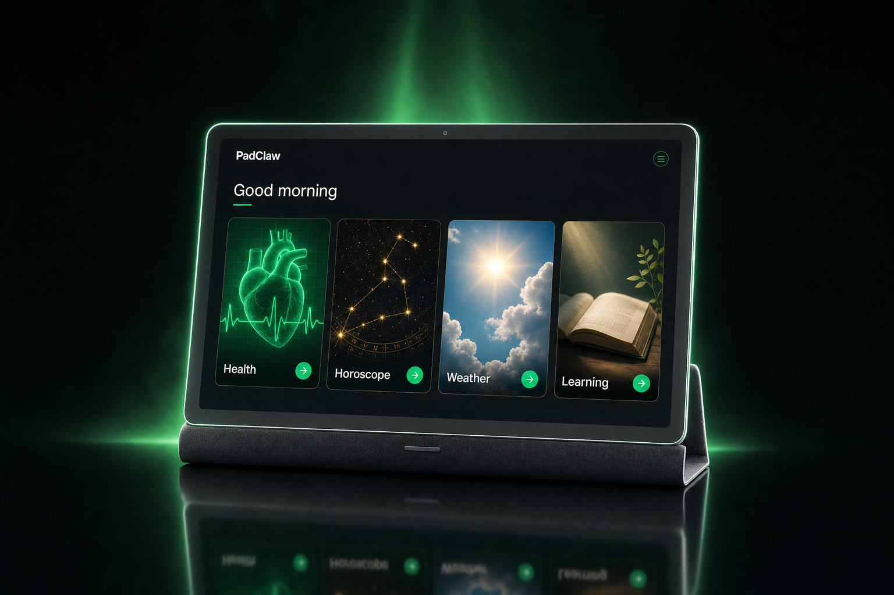
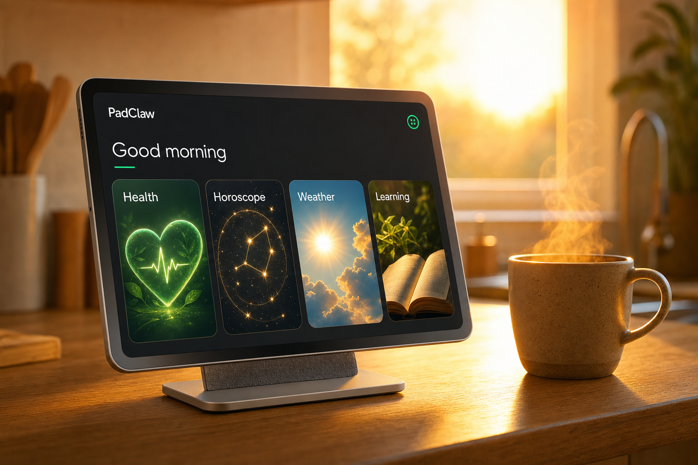
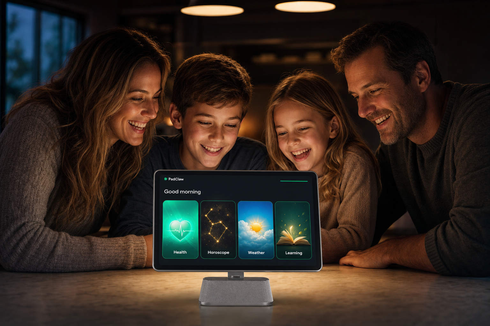
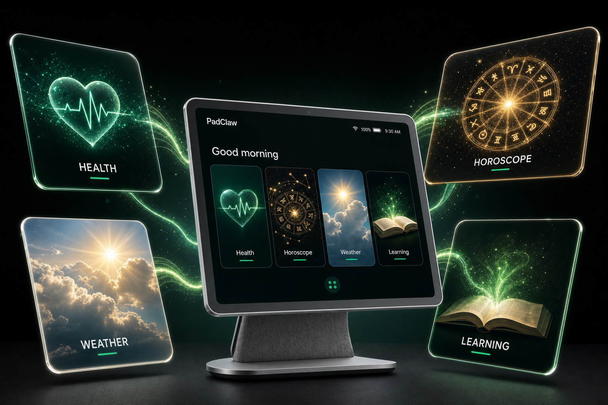
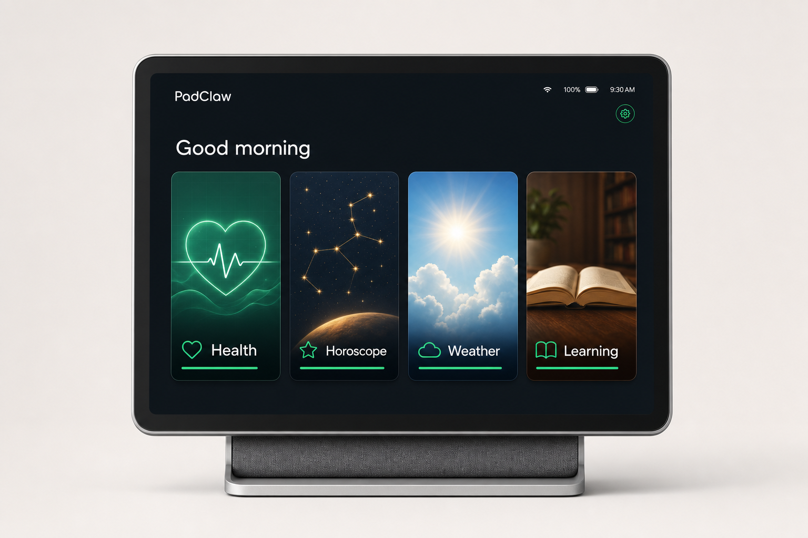

五種不同策略，各附 Kickstarter 探索頁縮圖模擬（右側小卡）——封面強不強，要在 240px 寬、被上百個專案包圍的情境下判斷，不是全螢幕。
選定後把該檔名改為 hero 使用，或告訴我編號，我直接替換 kickstarter-us.html 的主圖。
策略：在滿版白底縮圖的探索頁中，深色高對比最搶眼。綠色輪廓光 = 品牌色記憶點。適合訴求「旗艦新品」的定位，Humane/Nothing 都用這路線。風險：偏冷，情感溫度低。

策略：夕陽逆光＋咖啡熱氣，賣的是「早晨儀式感」而非硬體。與四頻道的日常敘事最一致。風險：暖色調縮圖在探索頁常見，辨識度中等。

策略：人臉是縮圖點擊率最強的元素（廣告界鐵律），螢幕光打亮全家笑臉 = 「科技讓家人聚在一起」一秒讀懂。最符合 Family AI Screen 定位。風險：產品本體較小，硬體控背友可能無感。

策略：一張圖講完產品概念——一台裝置、四個世界。漂浮玻璃卡片＋綠色光軌，在縮圖尺寸也有強烈圖形性。最「Kickstarter 爆款」的視覺語言。風險：偏 render 感，與內頁實拍風格略有落差。

策略：正面置中、大量留白，深色螢幕在淺底上對比最大，任何尺寸都清楚。UI（四個頻道磁貼）就是主角，直接展示「Channels, Not Apps」。風險：安全牌，不會輸但也可能不夠「搶」。
